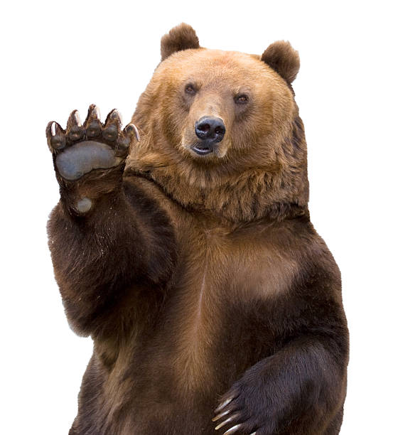

|
|
|  | ¿Por qué los osos pardos se encuentran en peligro de extinción?Los osos pardos son una especie de mamífero carnívoro que habita en diversas regiones de Europa, Asia y América del Norte. Son conocidos por su pelaje marrón y su gran tamaño, pudiendo llegar a pesar hasta 700 kilogramos en el caso de los machos. Los osos pardos se encuentran en peligro de extinción debido a la pérdida de su hábitat natural, la caza furtiva y los conflictos con humanos. La deforestación, la urbanización y la fragmentación de su territorio han reducido considerablemente sus poblaciones. Además, la caza ilegal y la caza por trofeo han contribuido a su disminución. Es importante concienciar sobre la importancia de conservar el hábitat de los osos pardos y tomar medidas para proteger esta especie vulnerable. |
Mas motivos sobre su extinción |
|